What Pokémon Names Mean in Japanese
144 Japanese names explained – Gen 1 and every starter
Japanese Pokémon names are often very literal. Charmander is ヒトカゲ (Hitokage), simply “fire lizard”. Pikachu is the sound of a spark plus a mouse’s squeak. Here is what the names really mean.
Jump to: Generation 1 · All starter Pokémon · Pokémon types in Japanese
Generation 1 (Kanto)
| Pokémon | Japanese | Meaning |
|---|---|---|
| フシギダネ Fushigidane | ふしぎ “mysterious” + 種 “seed” Its name is literally “mysterious seed” – fitting for the bulb on its back. | |
| フシギソウ Fushigisō | ふしぎ “mysterious” + 草 “plant” The seed has sprouted, so the name changes from “seed” to “plant”. | |
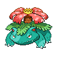 Venusaur | フシギバナ Fushigibana | ふしぎ “mysterious” + 花 “flower” The last stage of the line: the plant finally becomes a “mysterious flower”. |
| ヒトカゲ Hitokage | 火 “fire” + トカゲ “lizard” A plain and perfect description: a “fire lizard”. | |
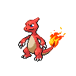 Charmeleon | リザード Rizādo | リザード “lizard” The Japanese name is just the English word “lizard” written in katakana. |
| リザードン Rizādon | リザード “lizard” + ン “dinosaur-style ending” “Lizard” plus the “-don” ending heard in dinosaur names like iguanodon. | |
| ゼニガメ Zenigame | 銭亀 “young pond turtle” Zenigame is a real Japanese word for a baby turtle. It literally means “coin turtle”, because the shell looks like an old coin. | |
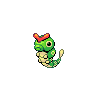 Caterpie | キャタピー Kyatapī | キャタピー “caterpillar” From the English word “caterpillar”. |
| バタフリー Batafurī | バタフリー “butterfly” From the English word “butterfly”, the same as in English. | |
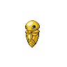 Kakuna | コクーン Kokūn | コクーン “cocoon” The English word “cocoon” in katakana. |
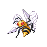 Beedrill | スピアー Supiā | スピアー “spear” Named after the spears on its arms. |
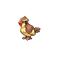 Pidgey | ポッポ Poppo | ポッポ “coo-coo” Poppo is the sound a pigeon makes in Japanese – the same sound as in the children’s song “Hato poppo”. |
| ピジョン Pijon | ピジョン “pigeon” The English word “pigeon” in katakana. | |
| コラッタ Koratta | 子 “small” + ラッタ “rat” A “little rat”. Its evolution is simply ラッタ, “rat”. | |
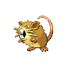 Raticate | ラッタ Ratta | ラッタ “rat” Just “rat” – the little ko (子) is dropped once it grows up. |
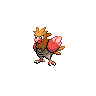 Spearow | オニスズメ Onisuzume | 鬼 “demon” + 雀 “sparrow” A “demon sparrow”, because of its fierce temper. |
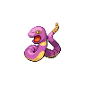 Ekans | アーボ Ābo | アーボ “boa (backwards)” Like its English name (snake backwards), the Japanese name is “boa” read backwards. |
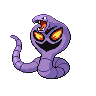 Arbok | アーボック Ābokku | アーボック “kobra (backwards)” “Kobra” spelled backwards – the same trick as its English name. |
| ピカチュウ Pikachū | ピカ “sparkle” + チュウ “squeak” Pika is the Japanese sound of something flashing or sparkling, and chū is the squeak of a mouse. | |
| ライチュウ Raichū | 雷 “thunder” + チュウ “squeak” Pika (sparkle) grows up into rai (thunder). | |
| サンド Sando | サンド “sand” Simply the English word “sand”. | |
| サンドパン Sandopan | サンド “sand” + パン “pangolin” Sand plus pangolin, the scaly animal it is based on. | |
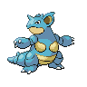 Nidoqueen | ニドクイン Nidokuin | ニド “from Nidoran” + クイン “queen” Nidoran becomes a queen. |
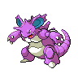 Nidoking | ニドキング Nidokingu | ニド “from Nidoran” + キング “king” Nidoran becomes a king. |
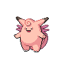 Clefable | ピクシー Pikushī | ピクシー “pixie” The English word “pixie”, a small fairy. |
| ロコン Rokon | 六 “six” + コン “a fox’s cry” Roku is six (its six tails) and kon is the sound a fox makes in Japanese. | |
| キュウコン Kyūkon | 九 “nine” + コン “a fox’s cry” Six tails become nine: kyū is nine. It is based on the nine-tailed fox of Japanese legend. | |
| プリン Purin | プリン “custard pudding” Purin is the Japanese word for custard pudding – soft, round and wobbly. | |
| プクリン Pukurin | ぷく “puffed up” + プリン “pudding” A puffed-up pudding. | |
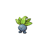 Oddish | ナゾノクサ Nazonokusa | 謎の “mysterious” + 草 “grass” Literally “the mysterious grass”. |
| クサイハナ Kusaihana | 臭い “smelly” + 花 “flower” A “smelly flower” – which is also a pun on kusa (grass). | |
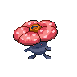 Vileplume | ラフレシア Rafureshia | ラフレシア “Rafflesia” Named after Rafflesia, the giant flower that smells of rotten meat. |
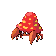 Parasect | パラセクト Parasekuto | パラ “parasite” + セクト “insect” A parasite and an insect in one name. |
| モルフォン Morufon | モルフォン “morpho” From the morpho, a large and colourful butterfly. | |
| ディグダ Diguda | ディグ “dig” From the English word “dig”. | |
| ダグトリオ Dagutorio | ダグ “dug” + トリオ “trio” Three Diglett digging together: a trio. | |
| ニャース Nyāsu | ニャー “meow” Nyā is how a cat says “meow” in Japanese. | |
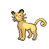 Persian | ペルシアン Perushian | ペルシアン “Persian cat” Named after the Persian cat breed. |
| コダック Kodakku | 子 “small” + ダック “duck” A “little duck”. | |
| ゴルダック Gorudakku | ゴル “gold” + ダック “duck” The little duck grows into a golden duck. | |
| マンキー Mankī | マンキー “monkey” The English word “monkey” in katakana. | |
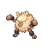 Primeape | オコリザル Okorizaru | 怒り “anger” + 猿 “monkey” Literally the “angry monkey”. |
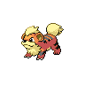 Growlithe | ガーディ Gādi | ガーディ “guard” From “guard” or “guardian” – it is a loyal guard dog. |
| ウインディ Uindi | ウインディ “windy” From “windy”, because it runs as fast as the wind. | |
| ニョロモ Nyoromo | にょろ “wriggly” Nyoro-nyoro is the Japanese sound of something wriggling, like a tadpole’s tail. | |
| ユンゲラー Yungerā | ユンゲラー “Uri Geller” Based on Uri Geller, the famous spoon-bender. He later sued over the name, and Kadabra disappeared from Pokémon cards for about twenty years. | |
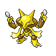 Alakazam | フーディン Fūdin | フーディン “Houdini” Named after the escape artist Harry Houdini. |
| ワンリキー Wanrikī | 腕力 “arm strength” Wanryoku means physical strength in your arms. | |
| ゴーリキー Gōrikī | 剛力 “great strength” The strength level goes up: gōriki is “mighty strength”. | |
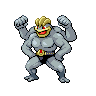 Machamp | カイリキー Kairikī | 怪力 “monstrous strength” Kairiki means superhuman strength. The three names show the strength going up step by step. |
| マダツボミ Madatsubomi | まだ “still” + 蕾 “bud” “Still a bud” – it has not bloomed yet. | |
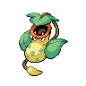 Victreebel | ウツボット Utsubotto | ウツボ “pitcher plant” + ボット “pot” From utsubo-kazura, the Japanese name for the pitcher plant that traps insects. |
| メノクラゲ Menokurage | 目の “eyed” + クラゲ “jellyfish” An “eyed jellyfish”, after the red gems that look like eyes. | |
| ドククラゲ Dokukurage | 毒 “poison” + クラゲ “jellyfish” Simply a “poison jellyfish”. | |
| イシツブテ Ishitsubute | 石つぶて “a thrown stone” Ishitsubute means a stone thrown at someone. | |
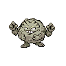 Graveler | ゴローン Gorōn | ゴロン “rolling sound” Goro-goro is the Japanese sound of something heavy rolling. |
| ポニータ Ponīta | ポニー “pony” From the English word “pony”. | |
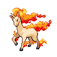 Rapidash | ギャロップ Gyaroppu | ギャロップ “gallop” From “gallop”, the fastest way a horse runs. |
| ヤドン Yadon | ヤド “from yadokari (hermit crab)” + 鈍 “slow” Yadokari is a hermit crab (it ends up carrying a Shellder) and don means dull or slow. | |
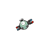 Magnemite | コイル Koiru | コイル “coil” From the English word “coil”, as in an electric coil. |
| レアコイル Reakoiru | レア “rare” + コイル “coil” A “rare coil” – three Coil joined together. | |
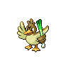 Farfetch'd | カモネギ Kamonegi | 鴨 “duck” + 葱 “leek” From the Japanese saying “kamo ga negi wo shotte kuru” – a duck turning up carrying its own leek, ready for the pot. It means something conveniently falling into your lap. |
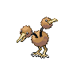 Doduo | ドードー Dōdō | ドードー “dodo” Named after the dodo bird. |
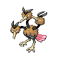 Dodrio | ドードリオ Dōdorio | ドードー “dodo” + トリオ “trio” A dodo with three heads: a trio. |
| ジュゴン Jugon | ジュゴン “dugong” Named after the dugong, a sea mammal. | |
| ベトベター Betobetā | べとべと “sticky” Betobeto is the Japanese word for something sticky and gooey. | |
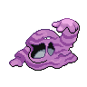 Muk | ベトベトン Betobeton | べとべと “sticky” Even more sticky goo than Grimer. |
| シェルダー Sherudā | シェル “shell” From the English word “shell”. | |
| ゴース Gōsu | ゴース “ghost” From “ghost”. Its evolution’s Japanese name is exactly ゴースト (ghost). | |
| ゴースト Gōsuto | ゴースト “ghost” The English word “ghost”, written in katakana. | |
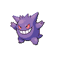 Gengar | ゲンガー Gengā | ゲンガー “Doppelgänger” From Doppelgänger, a ghostly double of a living person. |
| イワーク Iwāku | 岩 “rock” Iwa means rock – fitting for a giant rock snake. | |
| スリープ Surīpu | スリープ “sleep” From the English word “sleep”. | |
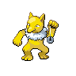 Hypno | スリーパー Surīpā | スリーパー “sleeper” From “sleeper” – it puts others to sleep. |
| クラブ Kurabu | クラブ “crab” From the English word “crab”. | |
| キングラー Kingurā | キング “king” + クラブ “crab” A king crab. | |
| ビリリダマ Biriridama | ビリリ “zap” + 玉 “ball” Biri-biri is the Japanese sound of an electric shock, and tama means ball. | |
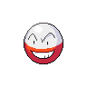 Electrode | マルマイン Marumain | 丸 “round” + マイン “mine” A “round mine” – a land mine that explodes. |
| タマタマ Tamatama | タマ “ball / egg” + タマ “ball / egg” Tama means ball and also comes from tamago (egg). It is doubled because it is a group of eggs. | |
| カラカラ Karakara | からから “rattling” Karakara is the sound of something dry and hollow rattling. | |
| ガラガラ Garagara | がらがら “loud rattle” Garagara is a louder rattle, and also the Japanese word for a baby’s rattle toy. | |
| サワムラー Sawamurā | サワムラー “Sawamura” Named after Tadashi Sawamura, a famous Japanese kickboxer – it is the kicking Pokémon. | |
| エビワラー Ebiwarā | エビワラー “Ebihara” Named after Hiroyuki Ebihara, a Japanese boxing champion – it is the punching Pokémon. | |
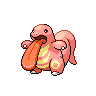 Lickitung | ベロリンガ Beroringa | べろ “tongue” Bero is a casual Japanese word for tongue. |
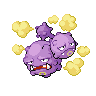 Weezing | マタドガス Matadogasu | また “more” + ドガス “poison gas” “More poison gas” – two Koffing joined together. |
| サイホーン Saihōn | 犀 “rhino” + ホーン “horn” Sai is the Japanese word for rhinoceros. | |
| サイドン Saidon | 犀 “rhino” + ドン “dinosaur-style ending” Rhino plus the “-don” of dinosaur names. | |
| ラッキー Rakkī | ラッキー “lucky” From the English word “lucky” – it is said to bring happiness. | |
| ガルーラ Garūra | ガルーラ “kangaroo” From kangaroo. | |
| タッツー Tattsū | 竜 “dragon” From tatsu-no-otoshigo, the Japanese word for seahorse, which literally means “dragon’s child”. | |
| シードラ Shīdora | シー “sea” + ドラ “dragon” A sea dragon. | |
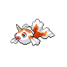 Goldeen | トサキント Tosakinto | トサキン “Tosakin goldfish” Named after the Tosakin, a fancy goldfish breed from Kōchi with a fan-shaped tail. |
| ヒトデマン Hitodeman | ヒトデ “starfish” + マン “man” A “starfish man”. | |
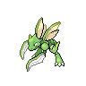 Scyther | ストライク Sutoraiku | ストライク “strike” From the English word “strike”. |
| ルージュラ Rūjura | ルージュ “rouge” From rouge, the French word for red lipstick. | |
| ケンタロス Kentarosu | ケンタウロス “centaur” From kentauros, the centaur of Greek myth, and tauros, Greek for bull. | |
| コイキング Koikingu | 鯉 “carp” + キング “king” The “carp king” – a big name for the weakest Pokémon. | |
| メタモン Metamon | メタモン “from metamorphosis” From metamorphosis, the act of changing shape. | |
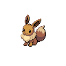 Eevee | イーブイ Ībui | イー “E” + ブイ “V” E and V, short for “evolution”. |
| シャワーズ Shawāzu | シャワーズ “showers” From “showers”. | |
| サンダース Sandāsu | サンダース “thunders” From “thunders”. | |
| ブースター Būsutā | ブースター “booster” From “booster”, as in a rocket booster. | |
| ポリゴン Porigon | ポリゴン “polygon” From polygon – it is made of computer graphics. | |
| オムナイト Omunaito | オムナイト “ammonite” From the ammonite, a real fossil shellfish. | |
| カブト Kabuto | 兜 “helmet” Kabuto is a samurai helmet, and kabutogani is the Japanese name for the horseshoe crab it is based on. | |
| プテラ Putera | プテラ “pteranodon” From the pteranodon, a flying reptile. | |
| フリーザー Furīzā | フリーザー “freezer” Simply “freezer”. The three legendary birds are named fire, thunder and freezer in Japanese. | |
| サンダー Sandā | サンダー “thunder” Simply “thunder”. | |
| ファイヤー Faiyā | ファイヤー “fire” Simply “fire”. | |
| ミニリュウ Miniryū | ミニ “mini” + 竜 “dragon” A “mini dragon”. | |
| ハクリュー Hakuryū | 白 “white” + 竜 “dragon” A “white dragon”. | |
| カイリュー Kairyū | 海 “sea” + 竜 “dragon” A “sea dragon” – the Pokédex says it lives in the sea. | |
| ミュウツー Myūtsū | ミュウ “Mew” + ツー “two” The same as in English: Mew number two. |